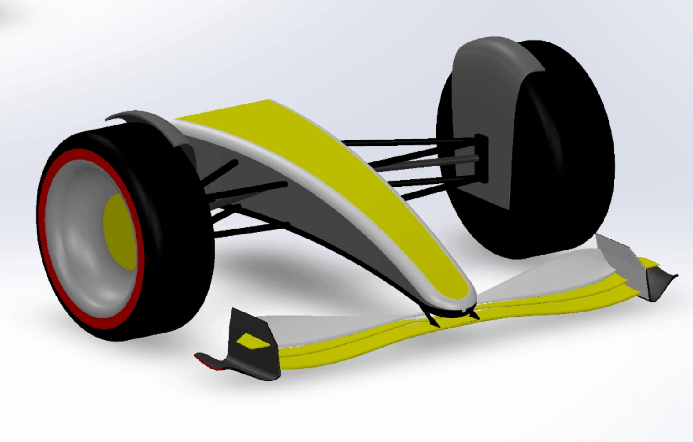
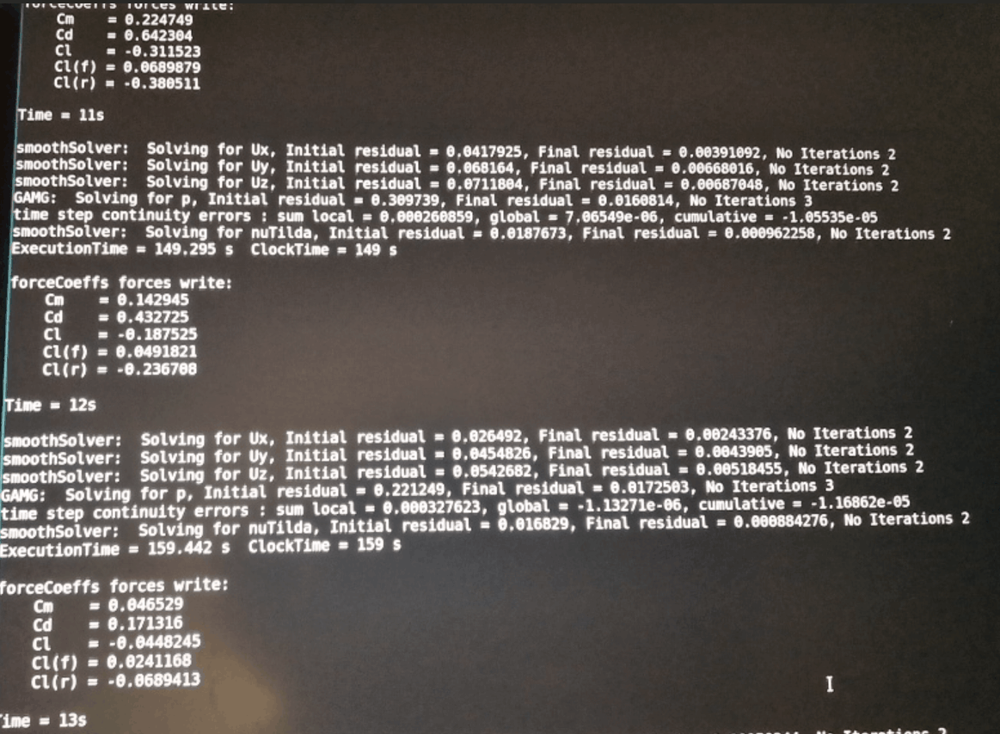
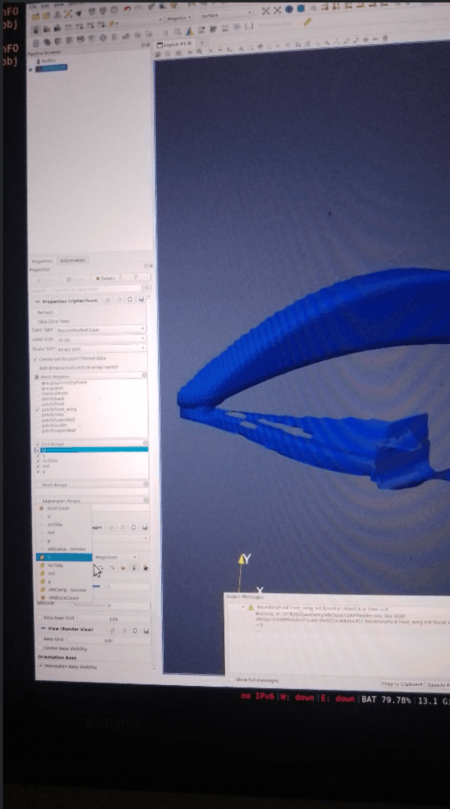

LOG_01 // SYSTEM EVOLUTION
FORMULA CAR AERODYNAMICS
FORMULA CAR AERODYNAMICS
90s, 2022, 2026 PIPELINE

Applying to top-tier motorsport and aerospace programs made one reality extremely clear: everyone knows how to draw shapes in CAD, but very few understand true vehicle dynamics and validation. When you are fighting for a spot in a high-performance industry, you cannot wait for an opportunity to be handed to you. You have to build it yourself.
I set out to engineer my own digital testing pipeline. This project is not just a showcase of 3D modeling; it is a three-part evolution tracking how aerodynamic philosophy has shifted over the decades, and how I evolved from a CAD operator into a Systems Engineer.
Before you can manipulate air, you have to understand the chassis. The late-90s F1 era was less about micro-aerodynamics and more about raw mechanical grip and straightforward packaging. I used this era as my control geometry. It taught me how to establish the critical mechanical limits wheelbase, track width, and driver positioning.
The logic here was simple: build a solid, low-computational baseline. By keeping the surfaces relatively simple, I could validate my initial boundary conditions and simulation physics in Ansys Fluent without the overhead of massive cell counts.


In 2022, regulations shifted dramatically to focus on managing "dirty air" and utilizing the ground effect. The engineering logic changed completely—it was no longer just about generating localized downforce; it was about cleanly routing the turbulent wake away from the rear tires to allow closer racing.
I used advanced Fusion 360 techniques—specifically G2 curvature continuity, complex lofting, and boundary fills—to create a multi-element front wing and tightly wrapped engine cover. The goal was to prove I could master high-quality surface continuity to minimize flow separation before the air even reached the rear diffuser.

A beautiful model is useless if you cannot definitively prove that it works. The upcoming 2026 regulations represent the absolute pinnacle of aerodynamic efficiency and active aero concepts. To test my 2026-compliant front wing, I had to stop relying on standard commercial GUI software.
I engineered the new front wing assembly in SolidWorks, exported the geometry, and built a custom Computational Fluid Dynamics (CFD) wind tunnel entirely in a Linux environment. Using OpenFOAM, I wrote custom Bash scripts to automate the generation of multi-million-cell meshes and monitor solver convergence. I then extracted the telemetry into ParaView to analyze pressure distribution and turbulent wake structures. This is where the project stopped being just about hardware design, and became about engineering a complete, automated validation system.



Studying how Formula 1 cars evolved is one thing. Trying to design one is another.
What began in late 2025 as a personal hypercar concept eventually became a self-directed engineering project focused on the 2026 Formula 1 regulations, aerodynamic surface modelling and computational fluid dynamics.
This section documents that journey — including the parts that worked, the parts that failed, and what the simulations revealed. This is a self-directed engineering project, not an official F1 engineering programme.
In late 2025 I started Velocity-X as a personal hypercar concept. The idea was a dual-mode active aerodynamic philosophy: a low-drag straight-line concept for top speed, and a high-downforce cornering concept for grip — connected by split-flow nose ducts that routed air differently depending on the driving mode.
Velocity-X was a styling and packaging study, not a regulation-compliant race car. But working through its proportions, inlets, outlets and wing concepts kept pulling me toward the same question the 90s-to-2022 evolution above raises: how do real regulations turn a concept into engineering constraints? That question is what pivoted the project toward a 2026 Formula 1 concept.
The decision was to redesign the concept around the 2026 Formula 1 regulations. Instead of free-form hypercar bodywork, every surface now had to answer to wheelbase, track width, aerodynamic packaging, sidepod undercuts, the downwash ramp, rear diffuser behaviour and overall bodywork geometry.
That transition — concept → regulations → engineering constraints → CAD — is the backbone of this journal. The 2026 ruleset became the design brief: shrink the packaging, clean up the wake like the 2022 philosophy demands, and push further toward efficiency and active-aero thinking.
I was relatively inexperienced with advanced surface modelling when this phase began, so the project became the learning environment. I moved the 2026 work into SolidWorks and learned by building: boundary surfaces, continuous-curvature transitions, guided aerodynamic blends and complex multi-element wing geometry for the front wing and bodywork.
The emphasis was on learning through implementation — getting curvature continuity clean enough that flow could stay attached, rather than claiming professional expertise. Each rebuild of a wing element or bodywork transition taught more than any tutorial on its own.
Mid-project, a dual-boot/OS failure temporarily locked me out of the CAD environment for approximately two weeks. No modelling, no exports — just recovery work. The project data was recovered, development resumed, and the model was carried forward to a watertight half-car symmetry model suitable for CFD. Engineering development isn't always linear, and this was the reminder.
With geometry in hand, I built the validation side on Ubuntu with OpenFOAM 11: a virtual wind tunnel using blockMesh for the background domain, a half-car symmetry setup to keep cell counts manageable, and an automated CFD workflow of geometry preparation, meshing and solver setup driven by scripts. I am deliberately not listing solver settings or physical parameters here beyond what is documented — the point is the pipeline, not invented numbers.
Meshing was done with snappyHexMesh, producing a multi-million-cell mesh with refinement concentrated around the aerodynamic surfaces. The hard part was preserving sharp trailing edges and resolving the complex F1 wing geometry — thin elements, tight gaps and high-curvature bodywork — without the mesh swallowing the details the CAD work had just created.
The first complete simulation successfully ran through 300 iterations, producing the project's first usable aerodynamic dataset. That milestone mattered more than any single number: the geometry was watertight, the mesh held, the solver ran, and the pipeline produced telemetry I could actually interpret in ParaView.
To be precise about scope: the upper aerodynamic surfaces produced approximately −26.2 N of downforce in this initial simulation. That is not a claim about the whole car, and it is not validated against wind-tunnel data. It is simply the first dataset this pipeline ever produced.
The headline number hid a setup problem. In the initial setup the floor reference was zmin = 0, which effectively sealed the floor against the ground in the CFD geometry/setup and restricted the intended underbody flow.
The consequence was incorrect underfloor behaviour: a high-pressure region underneath the car, even while the upper surfaces were producing downforce — leaving the overall vehicle still producing net lift. The wings were working; the floor wasn't allowed to.
A CFD simulation can converge and run successfully while the model or setup is physically inappropriate. This project drove that lesson home. What mattered after the 300 iterations was not just the number, but geometry preparation, boundary conditions, physical assumptions, mesh quality, result interpretation and engineering judgement.
Iteration 2 is planned and in progress — not yet completed. The workflow is to fix the underbody modelling first, then re-run and compare honestly against the first dataset.
Dual-mode active-aero hypercar study; split-flow nose ducts.
Pivot to 2026 rules: wheelbase, track width, packaging.
SolidWorks boundary surfaces; wings and bodywork.
~Two-week dual-boot failure; data recovered; watertight half-car model.
Ubuntu + OpenFOAM 11; blockMesh wind tunnel; half-car symmetry.
Multi-million cells; refined wings; sharp trailing edges.
First complete run; first usable aerodynamic dataset.
Upper surfaces only; not total vehicle load; unvalidated.
zmin = 0 sealed floor; high-pressure underbody; net lift.
Planned / in progress: clearance, re-mesh, re-run, compare.